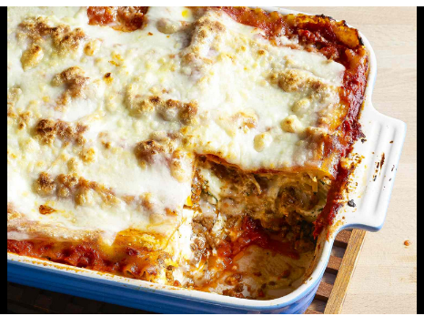

Lasagna Recipe

When John Chandler submitted this lasagna recipe to Allrecipes
more than 20 years ago, he had no idea how successful it would
become. One of our top-performing recipes of all time, World's
Best Lasagna racks up more than 7 million views per year and has
ranked among the most popular lasagna recipes on the internet
for two decades. Unfortunately, John unexpectedly passed away
at 53 years old — read all about his life and legacy here.
Making lasagna can be time-consuming, but the results are well worth the wait. You'll find a detailed ingredient list and step-by-step instructions in the recipe below, but let's go over the basics:
The Allrecipes community adores this lasagna recipe because it's incredibly customizable, so you can easily alter the ingredient list to suit your needs. If you want to stay true to the original recipe, though, these are the ingredients you'll need to add to your grocery list:
- Meat
- Onion and garlic
- Tomatoes
- Sugar
- Spices
- Prepare stuff
- Cut stuff
- Wash stuff
- Put on table
- Eat!